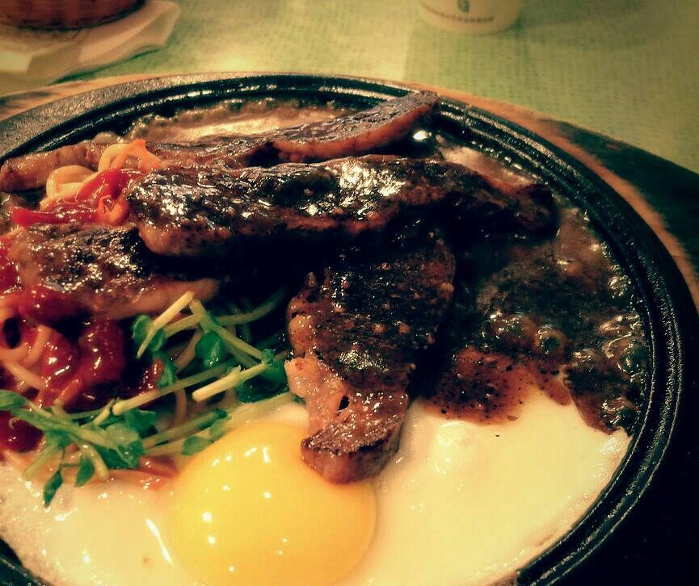

黑胡椒

「所以我說那個黑胡椒呢？」
〈黑胡椒〉
那天，大火跳躍在勇哥的臉上與雙手，最後像感染一樣蔓延到全身，一旁的他嚇得面無血色。等回過神來，救護車的聲音以及閃光已經漸漸遠離，勇哥請人帶的最後一句話，就是叫那小子以後要小心點。
－－－
客人結帳時對著櫃檯皺著眉說了句話。
收帳的阿姨賠了個笑臉後，惡狠狠地向他這瞥了一眼。
「怎麼又沒放黑胡椒？」
勇哥頭也沒抬，抄起炒完還熱著的方形鐵煎鏟，直接往他頭上敲。
他一句不吭，不服輸地大力炒動著手上的豆芽。加入黑胡椒時，他輕輕地轉了半圈，顆粒稀稀疏疏的烙在大盤的菜上，用懸殊的比例展示對抗。
勇哥一把奪去研磨瓶，再轉了五圈，沒說甚麼就將豆芽分給前面目睹這一切的老客人。客人吃了口，微笑向勇哥點頭，露出的牙齒塞上幾顆頑強地胡椒粒。
他伸手比了比牙，勇哥拿了一張剛吸完油的餐巾紙，快速地往他嘴招呼過去。
勇哥煎炒時，就像在打一套失傳的功夫，兩手煎鏟前後推拉、左右迴圈，有如傳出內力讓葉菜入味三分，一個轉手，肉排已在空中翻滾，卻無半點肉汁散出，落地一錘，震碎了肉中經脈，徒留柔嫩，澆上口酒，催動內功大火乍現，接著一陣刀光劍影，肉排看似無損，卻流出陣陣香濃氣味，最後拋空720度的研磨瓶，以迅雷不及掩耳的速度，撒下了一顆一顆黑色粉末顆粒，至此一門武藝演示完成，一道焦香多汁的牛排就橫空出世了。
看在徒弟的眼裡，每次演練震懾著他，也試圖完美複製，唯最後撒上黑胡椒的那個華麗又確實的步驟，只能望洋興嘆。
那天，烈酒一如往常地澆上鐵板，卻不知怎地漫起大火，火跳上來的前一秒，勇哥從旁出現使勁推開他，火焰轉而攀上勇哥的臉與雙手，瞬間長滿全身。
勇哥再也沒有出現了。
如今，每道餐點上，都有足夠的黑胡椒，但他只能做到360度的弧圈，還不是每次都能成功。
而聽說昨夜勇哥去找他了，好像只問了句「有記得加黑胡椒嗎？」
他卻不停地流淚，勉強笑著擠出了一句「勇哥阿，一定要加嗎？」
一家烤肉萬家香，短篇故事滋味長
故事柑仔店
與你相約每個日落時分。